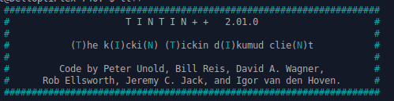

A review of some mud clients and their usefulness in MUD2
With a new
edition of Muddled Times coming out I thought I'd sum up the current status of
MUD2 clients from my own experience, and how well they work for mud2. This is
totally my own opinion, and your own experience may differ - your mileage may
vary as they say. I guess I thought this might be useful for any newcomers who
are wondering how best to access and play this game - not all clients are equal
by any means and some are downright poor these days - and others are
exceptionally advanced, complex and flexible. Choosing the right client for you
may well change over time as your knowledge of the game changes or your style
of play changes - it is a very personal thing!
I have focussed on desktop or laptop clients here - my experience with
tablet based ones has not been good - having tried a few - but not as many as
Crowley has - he may want to offer up a similar article on his tablet attempts
:)
I have also tried to focus on clients that will run on multiple platforms -
preferably Windows, Mac and Linux (not many personal users are running Solaris,
Beos, Tandem etc.. after all are they?) - but given the huge number of
variations in even the basic OSes I can not claim to have tried all
combinations. I have not included Zmud, Cmud, Gnome-mud for this reason (if I
were to then I would be rating Gnome-Mud as a 1/10 btw). Another reason for
excluding Cmud is that is costs $30 or $40 US, and although it does seem to
look good, with a lot of good features the price, and the fact that it is
Windows only, mean I am excluding it from this - all the reviewed clients are
free.
So here we go - I will run thru them - then there will be a little summary
at the end.
Well this is the client that you connect with if you hit the 'connect now'
button on the mudii.co.uk main page. As a web application it is platform
neutral so can run from any operating system that supports java. It only works
on mudii.co.uk.
You would think, or even expect that the client proudly displayed on our own
front page would be a great example of how to use the game - Unfortunately this
is not the case. Visually it is not unpleasant and could be rather good,
however to actually log on you do have to play around a bit and realise that
after entering your id and password in the window you THEN have to type 'mud'
at the 'phoenix' prompt as well (which is hidden behind the login box) - this
is not intuitive or obvious, never mind documented - if a first time user tried
this they might well give up in disgust. Lets hope I do not get fodded for
speaking honestly!
Once logged in you get a nice colourful display with the version number
(0.41 it clearly never made version 1.0!) displayed on the left side, and an
indicator field which should show your current stamina, magic and whether you
have any ailments or afflictions - however these fields are never updated so
are of no use at all. There is a compass field which is a nice little graphic
which you can use to click to go N, S, E, W, U, ZW etc. which does work but
would not be of any use to an experienced player - only a new user.
Justification for Rating: partially implemented functions, features on
screen not working, no logging
- Author - unknown (hope it wasn't Karya, Foddy, Turrican or Hawumph!)
- MUD2 functions supported - (partial)
- Logging abilities - None
- FKeys - none
- Macros - None
- Mapping - None
- Age - uncertain
- Overall Rating - 3/10
A lot of players like Clio and it does have some nice features. It supports
both MUD2.com and mudii.co.uk - reading the source code shows some little
tweaks that are included for each site. It supports many of the MUD2 specific
function codes that Richard has written into the game for use by clients, so if
you want to jump when the dragon dies try this with the sound effects on! It
has a stamina line at the top of the screen, supports logging and allows you to
define function keys for specific commands. Its a good starter client for many
people. HOWEVER - it is not currently being supported, and to get it to run
under Linux I had to email Tabitha for some detailed assistance, and to run
under windows 7 or windows 8 does need some persistence in getting the right
set up. The MAC version available for download if for PPC macs (old ones) but
many Unix versions are available, as is source. The Unix versions are not the
same version as windows and there appears to be less support of come functions
- notably sound. You are restricted to a fixed terminal width and to change the
font size is not straightforward - in windows you have to change a windows
setting not a clio setting.
Justification for rating - needs 'help' to run on current OSes but does
support MUD2 functions, logging and Fkeys.
- Author - Tabitha the witch
- MUD2 functions supported - extensive - includes dreamword capture
- Logging abilities - plain text or html
- FKeys - yes
- Macros - None
- Mapping - None
- Age - last updated c2004
- Source code is available (C)
- Overall Rating - 6/10
Tintin++

Tintin was originally produced in the early 1990s and influenced several
other clients over the years such as Zmud. It has continued to be maintained
under many authors and continues to offer a lot of flexibility. It's the one I
use personally most of the time, even though it does not support MUD2 functions
directly. With a bit of work you can add some nice tweaks like a status line
similar to mudiiclient or clio, and things like dreamword capture - but you
have to do it yourself - so its not a client for a total novice. Programming
experience is almost mandatory to be able to make use of its flexibility.
Mapping support is available, although it can not handle the more complex areas
of The Land (think about the old MUD1 rooms for example).
Justification for rating: flexible, customisable, good logging, loses out
for mapping and non support of MUD2 functions
- Author - various
- MUD2 functions supported - NONE
- Logging abilities - raw (exactly what the client receives) plain (escape
codes are stripped) or html logs supported
- FKeys - yes
- Macros - support for triggers and aliases
- Mapping - partial
- Scripting - yes - extensive proprietary built in and CLI interfaces to
python, lua and others
- Age - originally 1992 - most recent version within the last year and active
forum support
- Overall Rating - 7/10
Our very own Havoc has produced a client which is dedicated to mudii.co.uk, so
you know it will work here. It won't be of any use elsewhere - not even
mud2.com. It has a very similar look and feel to clio, but it works out of the
box so to speak, and does not need any tweaking for different OSes. The
download and startup instructions should be streamlined though.
There are a couple of nice features to this client. Logging is on by
default, and in html so it looks like what you saw on the screen. The screen
can be resized by simply dragging the frame, and the font can be resized using
ctrl+ or ctrl-. Mudiiclient also keeps track of who is in the game and will
autocomplete player names when you hit a tab - e.g. if Cenedra is in the game
just typing "cen" then the tab will expand to the full name. Haven't had a
chance to try this fully - like what happens when folk go invisible - cos there
haven’t been many around while I've been writing this article.
Justification for rating: Its just works! Download it and run it. Loses out
because of lack of customisability, and flexibility, but if you want a
straightforward client that does the job this is a great option to start
with.
- Author - Havoc
- MUD2 functions supported - partial - includes dreamword capture
- Logging abilities - automatic by default - html logs only
- FKeys - no
- Macros - partial in development
- Mapping - None
- Scripting - no
- Age - after a long holiday Havoc has restarted development
- Source code is available (java)
- Overall Rating - 7/10
This is what I would probably call the 'Rolls Royce' of mud clients at the
moment. It is modern, supports extensive scripting, all sorts of macros, and
its mapping capabilities should even be able to handle the somewhat unusual
geography of some areas of The Land (think about the old MUD1 rooms for
example). I haven’t tried all the options in the mapper - or even fully
explored the scripting - this client has huge potential and to be honest the
only down side I can think of is that it does not support the MUD2 specific
functions - that said it might be possible to do but would probably require
more effort than could be justified. It runs on Windows, Mac and Linux
systems.
Justification for rating: This client can do almost anything with a bit of
work, but still works well out of the box. As I say above its only downside is
that it doesn't directly support MUD2 functions.
- Author - various
- MUD2 functions supported - NONE
- Logging abilities - raw or html logs supported
- FKeys - yes
- Macros - triggers and aliases supported
- Mapping - None
- Scripting - yes - Lua supported
- Age - first release was in 2008 - ongoing development and support
- Source code is available (C++)
- Overall Rating - 9/10
Summary
|
MUD2 Support |
Logging |
FKeys |
Macros |
Scripting |
Rating |
| Mudtoo |
Partial |
No |
No |
No |
No |
3/10 |
| Clio |
Yes |
Yes |
Yes |
No |
No |
6/10 |
| Tintin++ |
No |
Yes |
Yes |
Yes |
Yes |
7/10 |
| Mudiiclient |
Partial |
Yes |
No |
in development |
No |
7/10 |
| Mudlet |
No |
Yes |
Yes |
Yes |
Yes |
9/10 |
| 
{kind=link}